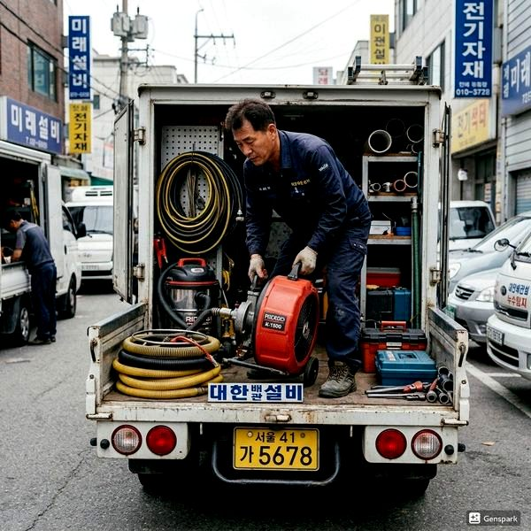
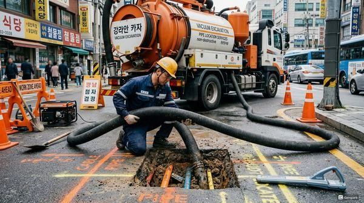
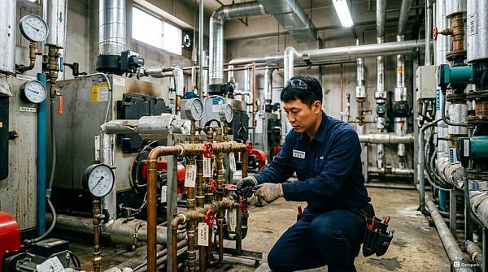

배관 관리 비용 절약하는 7가지 실전 팁
2026년 4월 12일 | 제우스시설관리

배관 문제가 발생한 후 수리하는 것보다 평소에 관리하는 것이 훨씬 저렴합니다. 가정에서도 간단한 관리 습관만으로 수십만 원의 수리비를 아낄 수 있습니다. 다음은 전문가가 권장하는 배관 관리 비용 절약 팁입니다.
첫째, 주 1회 끓는 물 흘리기입니다. 끓인 물 2리터를 싱크대와 세면대에 부어주면 기름때와 비누 찌꺼기가 녹아내려 막힘을 예방합니다. 비용: 0원. 둘째, 배수구 거름망 사용입니다. 음식물 찌꺼기와 머리카락이 배관에 들어가는 것을 원천 차단합니다.

셋째, 기름 분리수거입니다. 조리 후 남은 기름을 절대 배수구에 버리지 마세요. 기름이 식으면 굳어서 배관 막힘의 주원인이 됩니다. 넷째, 화학 세정제 최소화입니다. 강한 화학 세정제는 배관을 부식시킵니다. 베이킹소다와 식초 같은 천연 세정제를 활용하세요.
다섯째, 미사용 배수구 물 채우기입니다. 사용하지 않는 배수구에 주 1회 물을 부어 트랩 봉수를 유지하면 악취와 해충 유입을 막을 수 있습니다. 여섯째, 이상 징후 조기 대응입니다. 물이 느리게 내려가거나 꾸르륵 소리가 나면 완전히 막히기 전에 조치하세요.

일곱째, 전문가 정기점검입니다. 연 1회 전문가의 배관 점검을 받으면 큰 문제를 사전에 발견할 수 있습니다. 제우스시설관리는 내시경 카메라와 관로탐지기로 정밀 진단합니다. 작은 비용으로 큰 사고를 예방하세요. 28분 내 출동, 전화: 010-4406-1788